原文连接:https://www.cnblogs.com/jiyu-hlzy/p/11762128.html
- __new__方法的运行顺序
- 装饰器的概念的用法
- 三个内置装饰器
- 类中属性的访问过程
__new__方法
创建实例的方法
__new__方法是在类创建实例的时候自动调用的
实例是通过类里面的__new__方法创建出来的
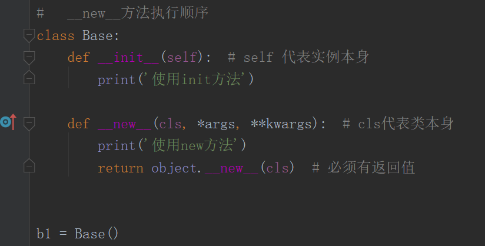
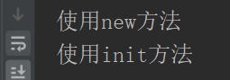
先调用__new__方法创建实例，再调用 __init__方法初始化实例
__new__方法，后面括号里的cls代表的是类本身
必须有返回值 父类名.__new__(cls)
单例模式
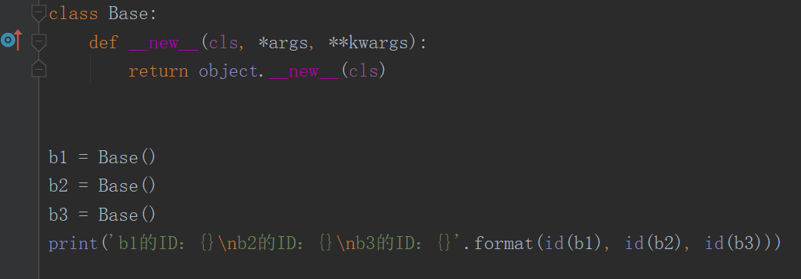
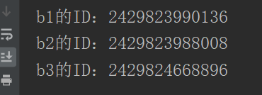
创建多个实例的时候，每个实例所指向的内存地址不同
单例模式让多个实例引用的是同一个实例，是一个实例的不同名字，指向同一内存地址
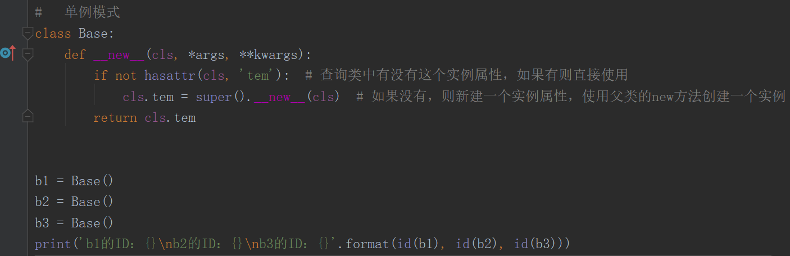
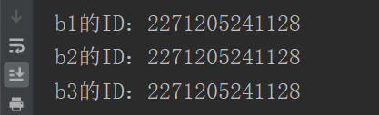
定制属性访问
就是对类里的属性进行增删改查的操作
增
实例名.属性名=值
setattr(实例名, '属性名', 值) # 有这个属性就修改，没有就增加
实例名.__setattr__('属性名',值) # 有这个属性就修改，没有就增加
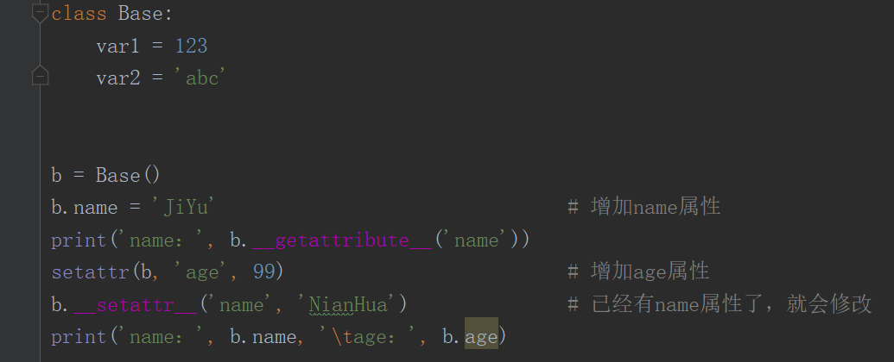
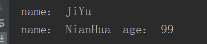
删
只能删除自己添加的属性
delattr(实例名, '属性名')
实例名.__delattr__('属性名')
del 实例名
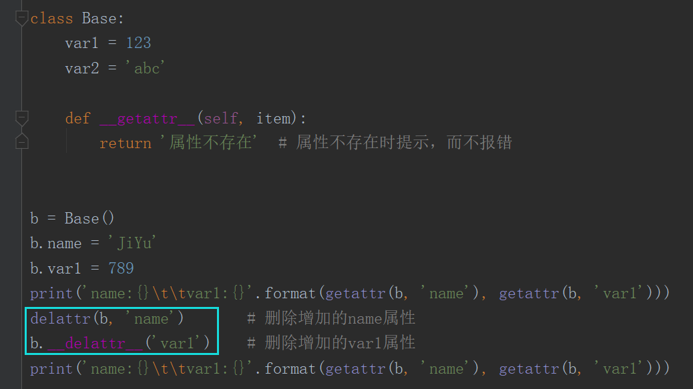
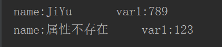
改
setattr(实例名, '属性名', 值) # 有这个属性就修改，没有就增加
实例名.__setattr__('属性名',值) # 有这个属性就修改，没有就增加
查
hasattr(实例名, '属性名') 返回bool值
getattr(实例名, '属性名') 返回属性值，不存在则报错
实例名. __getattribute__('属性名') 返回属性值，不存在则报错
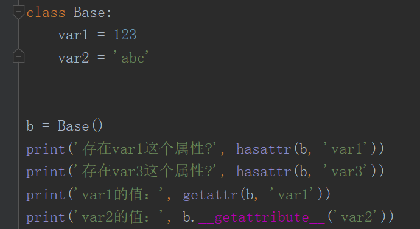
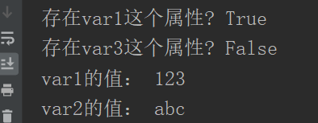
描述符
比较抽象的一个概念，了解即可
描述符协议：python描述符是一个“绑定行为”的对象属性，在描述符协议中，它可以通过方法重写属性的访问
这些方法有 __get__(), __set__(), 和__delete__()
如果这些方法中的任何一个被定义在一个对象中，这个对象就是一个描述符
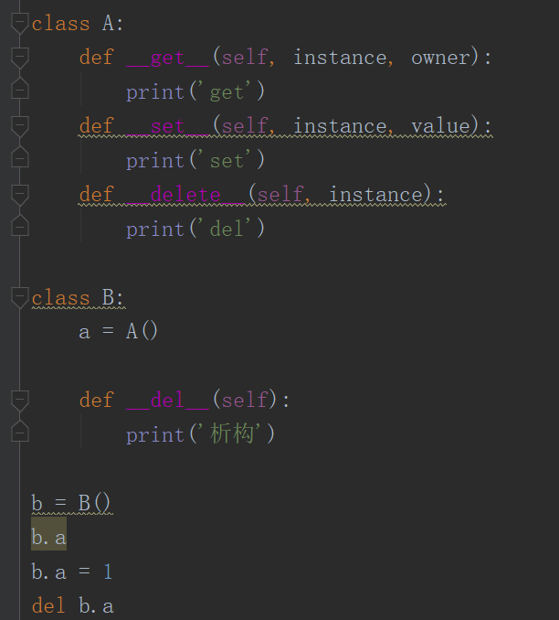
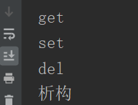
装饰器
本质是函数，能够实现在不修改原来的函数的基础上添加功能
在闭包的前提下进行装饰
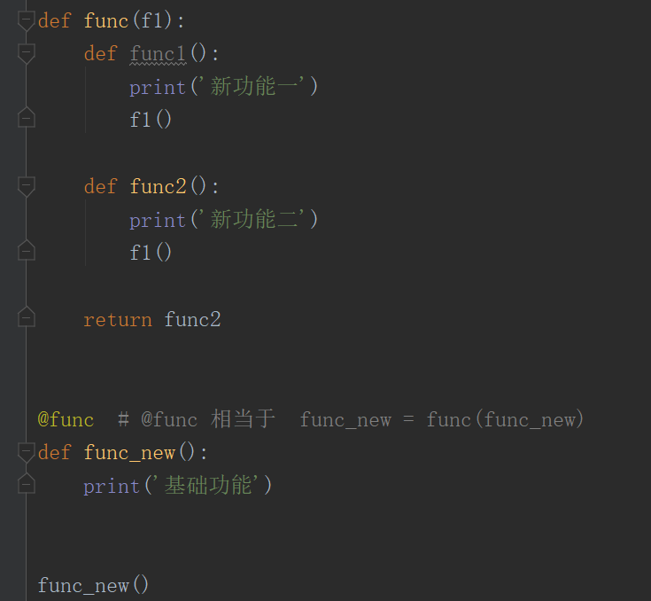

三个内置装饰器
@property # 就像和访问属性一样
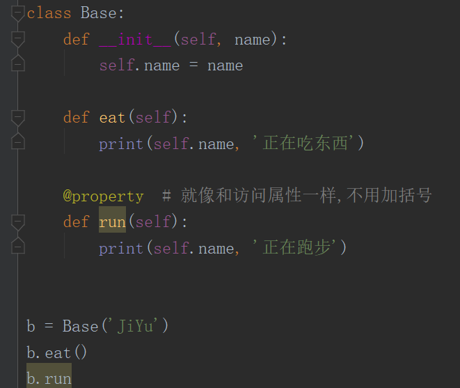
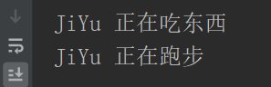
@staticmethod # 静态方法，与class类断开连接
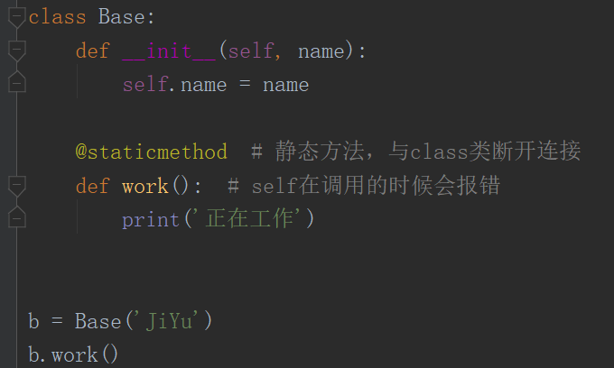
@classmethod # 类方法 cls代表类本身
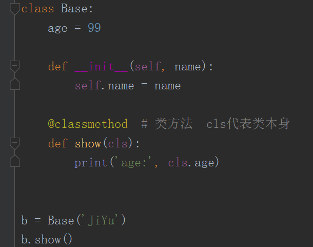
类装饰器
类也可以做装饰器，但是需要定义 __call__ 方法
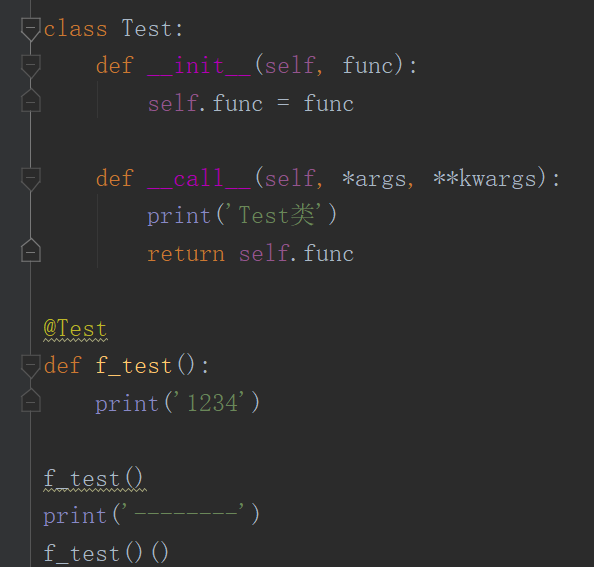
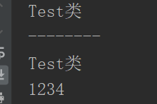